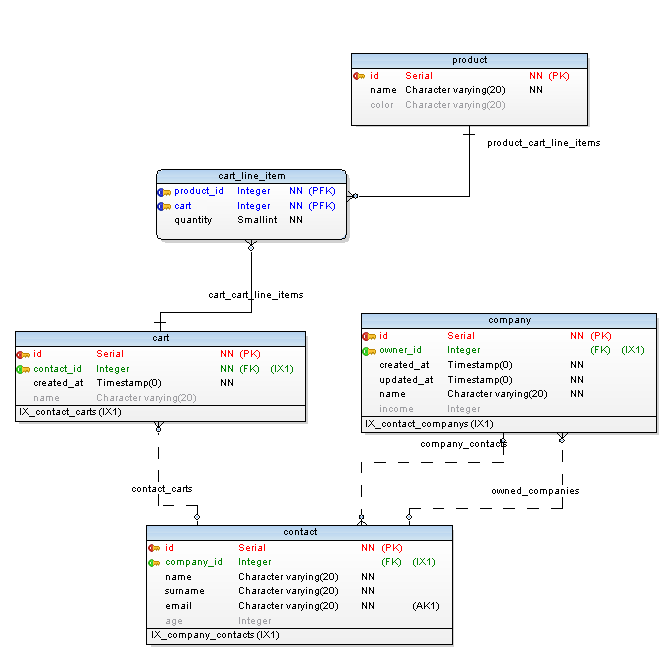

This template is successor of sequelize-pg-generator module which is used for creating sequelize models from existing PostgreSQL database.
Usage
Create template and model files:
$ pgen template sequelize -t sequelize-template
$ pgen exec sequelize-template -d our_crm -u user -p tOpSeCrEt -t model
In your application, create a sequelize object and initialize models with it:
var Sequelize = require('sequelize');
var sequelize = new Sequelize('database', 'user', 'password', { dialect: 'postgres', logging: false });
var model = require('./model/index.js').init(sequelize); // You only need to init once. You can just require later.
model.Company.findOne({ where: {id: 1} })
.then(function(company) {
console.log(company.name);
})
.catch(function(error) {
console.log(err.stack);
});
After you initialized your model, you shouldn't initialize it again and just require your model like below:
var model = require('./model/index.js'); // No init here, because it is initialized before.
// Your code here.
Features:
- Generated model files are as similar as possible to official Sequelize documents.
- Created files are static and transparent. They are not used to create models dynamically. So debugging and seeing what is generated is very easy for humans.
- Documented,
- Tested,
- No Dependencies on generated files,
- Multi schema support,
- One to many relation support (hasMany and belongsTo),
- Many to many relation support (belongsToMany),
- Inter-schema relation support. (i.e. public.account table to other_schema.cutomer table),
- Ultimately configurable and customizable by modifying template files,
- No configuration file to modify,
- CLI support,
- Default smart naming of models and relations,
- Very easy to override auto generated files,
- Table Specific Configuration.
Template Utility Functions
Templates have passed a variable called util which provides some useful utilities.
type: {{ util.sequelizeType(column) }} -> type: DataTypes.INTEGER
uniqueRelatedTables(table) ⇒ Array.<pgStructure.table>
Returns an array of all tables related to this table. Duplicates are removed, so every related table in the result array is unique.
Kind: global function
Returns: Array.<pgStructure.table> - - List of related tables.
| Param | Type | Description |
|---|---|---|
| table | pgStructure.table |
pg-structure table to search related tables for. |
sequelizeType(column) ⇒ string
Returns Sequelize ORM data type for given column.
Kind: global function
Returns: string - - Sequelize data type.
| Param | Type | Description |
|---|---|---|
| column | pgStructure.column |
pg-structure column object. |
Example
{{ util.sequelizeType() }} // DataTypes.INTEGER(3)
{{ sequelizeType('Sequelize') }} // Sequelize.INTEGER(3)
Relations
Relations are detected automatically. One to many (hasMany), many to one (belongsTo) and many to many (belongsToMany) relations are detected automatically. If two tables are joined via a join table this module detects it automatically and generates many to many sequelize relations. If a table has more than one foreign key, then it is considered join table. In reality it may not be a join table. However it is impossible to detect that.
Special Case: hasOne
In short: hasMany relations can be converted to hasOnerelations manually using custom-data.js.
Details: one to one (hasOne) relations does not really bring any design benefits. In fact, it would cause performance overheads to the database engine for having to link the table rows together. The 2 tables can actually be combined into a single table. However Sequelize provides hasOne type relations. Since there is no way to detect one to one relations automatically, they have to be added manually by using custom data file
For example:
Suppose Company has many Contacts. To make it one to one relation, below example may be added to custom-data.js. Please note Contact key is singular.
Key should be singular version of hasMany aliases.
module.exports = {
Company: {
hasOne: {
Contact: {}
}
}
};
Smart Default Naming of Aliases
This template uses table names or schema table names for model naming. For relations it uses foreign key names and relation names from your database. (You are naming your relations in database meaningfully right?) Default template is based on camelCase naming. You can easily change it to use snake_case or PascalCase by using provided filters. Naming conventions are based on Sequelize module suggestions and generated explicitly with 'as' parameter. Aliases can be turned of by providing a custom options file and setting generateAliases false.
module.exports = { generateAliases: false };
| Type of Object | Filters | Default Naming & Alias Rule |
|---|---|---|
| table | classCase | Table name. |
| hasMany | plural, classCase, stripPrefix(source) | Relation name in database. Table name stripped from beginning. |
| belongsTo | singular, classCase, relationName | Foreign key column name. If name ends with 'id' or '_id' it will be stripped. Otherwise 'related' is added at the beginning to prevent it from clashing with column name. |
| belongsToMany | plural, classCase, relationName('') | Join table name + foreign key in join table which refers to other table. If name ends with 'id' or '_id' it will be stripped. |

As an example for the schema above aliases are created as follows. Please note names of foreign keys in cart_line_item table: product_id and cart. To demonstrate different naming rules 'product_id' contains id suffix while 'cart' not.
| Relation | As | Why |
|---|---|---|
| Product.hasMany | CartLineItems | |
| Product.belongsToMany | CartLineItemCarts | cart_line_item + cart + s: Plural of join table name + foreign key column in join table referring to other table. '_id' suffix is stripped from column name. |
| Cart.belongsToMany | CartLineItemProducts | cart_line_item + product |
| Cart.hasMany | CartLineItems | |
| CartLineItem.belongsTo | RelatedCart | Related + cart: Singular of foreign key column prefixed with 'Related'. Otherwise 'Cart' relation and 'cart' column collide in same casing (camelCase, ClassCase etc.) |
| CartLineItem.belongsTo | Product | product |
FAQ
I have multiple schema with same table names in them. How can I prevent collision of my model names?
In your template;
- Rename 'sequelize/table/definition/{table.name}.js.nunj.html' as 'sequelize/table/definition/{table.schema.name}-{table.name}.js.nunj.html'.
- Change modelName macro in 'sequelize/table/definition/{table.schema.name}-{table.name}.js.nunj.html' as
{{ (table.schema.name + table.name) | classCase }}. - Add '{table.schema.name}-' string to 'sequelize.import' and 'require' parts in 'sequelize/db/index.js.nunj.html' file to match new model file's names.
I hate aliases that sequelize template generate. What can I do?
You have three choices. You either do:
- Disable aliases all together by creating a file named
option.js(you can use any name) with content as below:
module.exports = {
generateAliases: false // This disables aliases all together. See partials/has-many-nunj.html and other relation templates.
};
Feed that file to pgen
$ pgen exec sequelize-template -d our_crm -u user -p tOpSeCrEt -t model --optionsfile options.js
- Or use custom aliases for some or all models by creating a file name
custom-data.js(you can use any name) with similar content as below:
You can see original and overridden aliases in generated file 'relation-cheatsheet.txt'.
Account: {
hasMany: {
HasContacts: { // This is the default alias should have generated by pgen.
as: "'MyBeautifulAlias'" // This is the alias you want. You renamed 'HasContacts' as 'MyBeautifulAlias'
}
},
- Or change alias naming for all tables by changing has-many.nunj.html, belongs-to.nunj.html, belongs-to-many.nunj.html in partials directory of generated sequelize template.
*.nunj.html file extension is ugly.
This is not a question. nunj.html extension is chosen because nunjucks command line tools expect files with extension html. However some IDE's struggle to auto complete/help/color nunjucks, swig, twig, jinja files with html extension. We can define .nunj.html extension in IDE's to differentiate template files (.nunj.html) and html (.html) files correctly and make nunjucks command line tools happy.
However if you really like to use another file extension in your templates create template filw tih your desired extension and use --extension option of pgen
$ pgen exec sequelize-template -d our_crm -u user -p tOpSeCrEt -t model --extension html